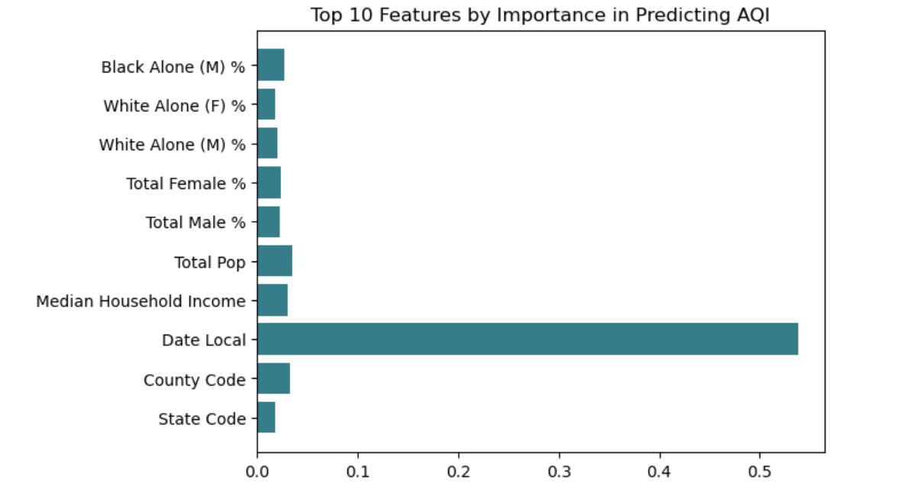

Final project on determining urban air pollution by income and racial demographics.
A blog post relating to our talk with Timnit Gebru
A blog post relating to unsupervised learning and image compression
A blog post investigating the bias of prediction models
An blog post illustrating the key techniques of linear regression
An blog post practing machine learning techniques on real life data
An blog post illustrating the key techniques of gradient descent
An blog post illustrating course material on perceptrons
An example blog post illustrating the key techniques you’ll need to demonstrate your learning in CSCI 0451.